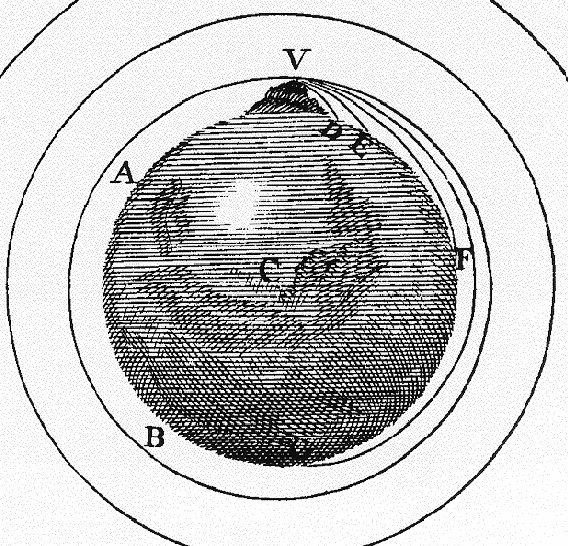

Descrição da Animação
A Ilustração 1.1 descreve como usar as Physlets. Em primeiro lugar, uma Physlet é uma animação (Applet) Java de Física (Physics, em inglês). As Physlets são usadas para animar e ilustrar fenómenos físicos e levantar questões sobre esses fenómenos. Muitas vezes precisas de recolher dados da animação e de fazer alguns cálculos para poderes responder às questões; outras vezes, ver a animação com atenção é suficiente.
|  |
Imagem do Livro Principia de Isaac Newton (1687).
As animações apresentadas neste livro serão muito semelhantes às imagens estáticas que vês noutros livros. No entanto, existem diferenças importantes que precisamos esclarecer, já que vamos fazer um uso extensivo deste tipo de animações ao longo do curso. Primeiro, considera a imagem desenhada por Sir Isaac Newton no seu livro Principia. É uma imagem estática que mostra possíveis órbitas de objetos à volta de Terra. É suposto imaginarmos objetos atirados do topo de uma montanha com diferentes velocidades iniciais e imaginar onde é que vão aterrar. (Também é suposto imaginarmos que para as condições certas, os objetos poderiam orbitar em círculos cada vez mais afastados do centro da Terra.)
Por favor espera até a animação estar completamente carregada.
Agora considera a Physlet de uma situação semelhante à descrita por Isaac Newton. A animação mostra 10 bolas idênticas que são lançadas do topo de uma montanha. A posição inicial das bolas é a mesma, mas as suas velocidades iniciais são diferentes. Início
Sabias que ...
Se observares atentamente verás que todas as órbitas são "círculos achatados" chamados elipses, exceto a órbita da bola vermelha, que é um círculo perfeito. Por outro lado, todas as bolas exceto a vermelha, têm uma rapidez variável ao longo da órbita. As bolas azuis (interiores) deslocam-se mais rapidamente perto da parte inferior do ecrã, enquanto as bolas verdes (exteriores) deslocam-se mais rapidamente perto da parte superior do ecrã. (Nota que decidimos mostrar as órbitas completas das bolas, mesmo para aquelas que colidiriam com a Terra. Fazemos isto para podermos comparar todas as órbitas.)
Este comportamento não é óbvio quando observamos o desenho feito por Newton no seu livro Principia, mas fica muito claro quando observamos a animação. Este efeito é ainda mais visível quando vemos apenas três bolas. As imagens fantasma das bolas são deixadas em intervalos de tempo iguais, para nos ajudar a visualizar melhor este efeito. Não te esqueças de carregar no botão "começar" depois de selecionares a hiperligação!
Nas ciências naturais, as simulações são geralmente deterministas. Tal significa que a animação evolui no tempo de acordo com um modelo matemático pré-definido. Os modelos que construímos para este livro podem ou não ser os modelos que melhor representam a realidade física. De facto, muitas vezes vamos apresentar vários modelos e pedir-te que seleciones aquele que está de acordo com a experiência. NÃO assumas que todas as simulações obedecem às leis da Física!
É importante não confundir determinista com previsível. As simulações que dependem de números aleatórios, que contêm um grande número de variáveis, ou que exibem caos, podem não ser previsíveis, no sentido em que o comportamento exato pode depender de alterações infinitesimais nas condições iniciais. Contudo, mesmo se os detalhes da dinâmica não podem ser determinados, o modelo ainda nos dá informação útil acerca dos tipos de comportamento que podem ocorrer.
© 2004 by Prentice-Hall, Inc. A Pearson Company
© 2014 Wolfgang Christian,
Mario Belloni, Paulo Simeão Carvalho, Edite Briosa, Manuel Filipe Costa